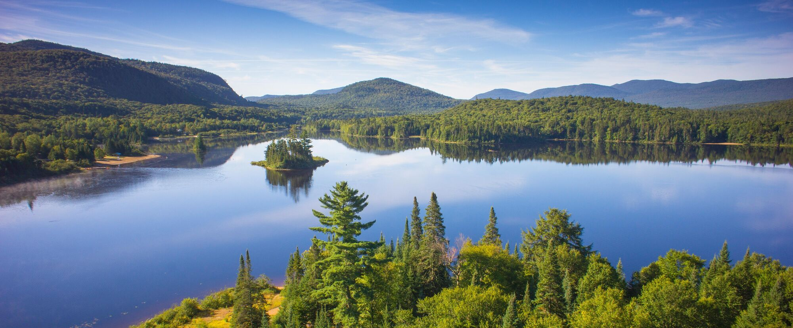

Les faits
Ici on peut trouve les faits au Québec
- Pays: Canada
- Statut : plus grande province du Canada
- Capitale : Québec
- Plus grande ville : Montréal
- Superficie : environ 1,54 million km²
- Population : environ 8,9 millions d'habitants (2025)
- Langue officielle : français/Environ 80% des habitants parlent français à la maison et Il y a aussi des langues des Premières Nations
- Particularités : beaucoup des forêts, lacs et rivières; beaucoup des animaux, des baleines, des caribous et des ours polaires
- Nature : Plus de la moitié du Québec est couverte de forêts, Il y a plus d'un million de lacs et rivières et le plus long fleuve est le Fleuve Saint-Laurent (environ 1200km)

- La taille : Le Québec est trois fois plus grand que la France et il est 1.542.000 km²
- Le climat : Les hivers sont longs et très froids et Il neige beaucoup de novembre à mars
- Économie : Le Québec produit beaucoup d'hydroélectricité

Vokabeln